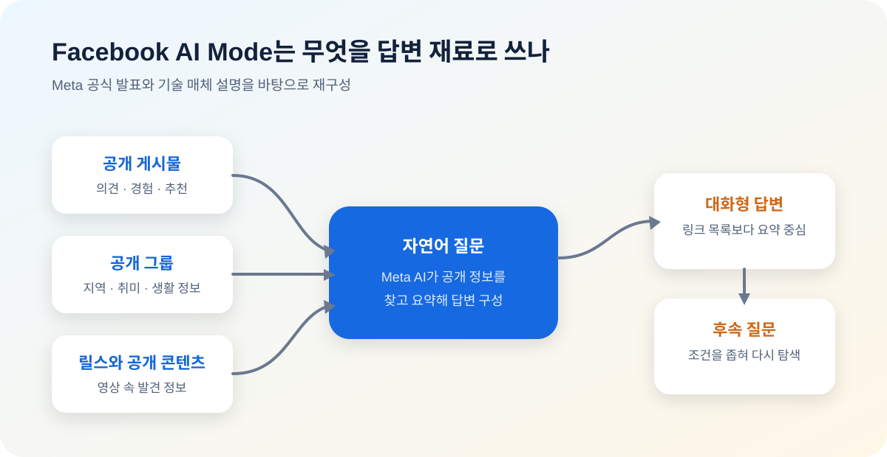

Meta, Facebook 검색에 AI Mode를 넣었다
Meta가 2026년 6월 15일 Facebook에 새로운 AI Mode를 도입했다. 핵심은 기존 검색처럼 링크 목록만 보여주는 방식이 아니라, Facebook 그룹과 릴스 등 Meta 앱에 공개적으로 올라온 의견과 추천을 바탕으로 AI가 답을 만들어준다는 점이다.
Why It Matters
검색의 재료가 웹페이지에서 소셜 데이터로 이동하고 있다
Meta는 이번 기능을 실제 사람들이 공개적으로 나누는 문화, 의견, 추천에 기반한 답변이라고 설명했다. 쉽게 말해 "이번 주말 어디 갈까?", "현지 사람들이 추천하는 장소는 어디냐?" 같은 질문에 검색엔진식 결과보다 커뮤니티형 답변을 주겠다는 전략이다.

검색 결과가 아니라 ‘사람들의 경험을 압축한 답’
Meta의 공식 설명에서 가장 중요한 단어는 ‘publicly’다. AI Mode는 비공개 메시지나 친구 전용 게시물을 뒤지는 기능으로 소개된 것이 아니라, Facebook과 Meta 계열 앱에 공개된 의견·추천·문화적 맥락을 바탕으로 답을 구성한다. 공개 그룹의 글, 릴스에 담긴 정보, 공개 게시물처럼 기존 검색엔진이 충분히 구조화하지 못했던 소셜 콘텐츠가 검색 재료가 되는 셈이다.
화면의 변화도 중요하다. 사용자는 검색 탭에서 자연어로 질문하고, 첫 답변이 부족하면 후속 질문을 이어갈 수 있다. 예를 들어 “아이와 갈 만한 서울 근교 캠핑장”을 묻고 곧바로 “대중교통으로 갈 수 있는 곳만”이라고 범위를 좁히는 식이다. 키워드를 바꿔가며 링크를 열던 검색 동작을 대화형 탐색으로 바꾸려는 설계다.
TechCrunch는 이 기능이 공개 게시물뿐 아니라 그룹과 릴스도 활용한다고 전했다. Meta는 같은 발표에서 사진 편집, 게시물 작성 지원 같은 AI 도구도 함께 공개했다. 따라서 AI Mode는 고립된 검색 기능이라기보다, 콘텐츠를 만들고 발견하고 다시 공유하는 Facebook 전 과정에 Meta AI를 끼워 넣는 제품 전략의 한 부분으로 보는 편이 정확하다.
Google과 다른 무기는 ‘웹 문서’가 아니라 ‘생활 대화’다
Google이 방대한 웹 문서와 상업 정보, 지도 데이터를 강점으로 삼는다면 Facebook이 내세울 수 있는 차별점은 사람들이 일상에서 남긴 경험과 관계의 맥락이다. 동네 맛집, 육아, 여행, 중고 거래, 취미 장비처럼 정답보다 최신 경험담이 중요한 질문에서는 공개 커뮤니티의 글이 기존 웹페이지보다 더 유용할 수 있다.
이 전략은 Meta에게 광고와 체류시간이라는 사업적 이점도 준다. 검색 답변이 충분히 유용하면 사용자가 외부 사이트로 나가지 않고 Facebook 안에서 탐색을 끝낼 수 있다. Marketplace의 상품, 지역 업체 페이지, 크리에이터 콘텐츠와 답변을 연결하기도 쉬워진다. 반대로 외부 웹사이트에는 Facebook이 새로운 트래픽 관문이 될지, 콘텐츠를 요약해 클릭을 줄이는 경쟁자가 될지 아직 불분명하다.
Search Engine Land가 이 기능을 ‘새로운 발견 엔진’으로 표현한 이유도 여기에 있다. 단순히 질문에 답하는 챗봇이 아니라, Meta가 이미 가진 소셜 그래프와 공개 콘텐츠를 검색 가능한 지식층으로 바꾸는 시도다. 성공 여부는 모델의 일반 지식보다 어떤 게시물을 골라 얼마나 잘 인용하고, 오래되거나 광고성인 게시물을 얼마나 잘 걸러내는지에 달려 있다.
추천에는 사실 확인보다 더 어려운 문제가 있다
공개 게시물은 뉴스 기사나 공식 문서와 성격이 다르다. 한 사람의 경험은 진실일 수 있지만 다른 사람에게 그대로 적용되지 않을 수 있고, 오래된 가격이나 영업시간이 최신 정보처럼 남아 있을 수도 있다. AI가 여러 글을 매끄러운 한 문단으로 합치면 이런 조건과 반대 의견이 사라져, 원문보다 더 확신에 찬 답으로 보일 위험이 있다.
조작 가능성도 봐야 한다. 업체나 정치 조직이 반복적으로 비슷한 게시물을 올리면, 단순 다수 의견처럼 보이게 만들 수 있다. Meta가 스팸·협찬·가짜 계정을 어떻게 낮게 평가하는지, 답변에서 원문 작성자와 날짜를 얼마나 명확히 보여주는지는 검색 신뢰를 좌우한다. 건강·금융·재난 같은 고위험 질문은 생활 추천과 같은 방식으로 처리해서는 안 된다.
The Verge의 체험 보도 역시 ‘Facebook 게시물에 근거한 검색’의 편리함과 함께 바로 이 문제를 지적했다. 사용자는 답변을 최종 사실로 받아들이기보다 출처 링크를 열어 게시 날짜, 작성자, 댓글의 반박을 확인해야 한다. Meta도 답변에 근거가 된 콘텐츠를 추적할 수 있게 만드는 것이 중요하다.
공개 글이라고 해서 AI 활용에 대한 동의까지 명확한 것은 아니다
법적으로 공개된 콘텐츠와 사용자가 기대하는 이용 맥락은 같지 않다. 공개 그룹에 여행 후기를 쓴 사람은 다른 회원이 검색해 읽을 것을 예상했을 수 있지만, 자신의 문장이 AI 답변의 일부로 광범위하게 재가공될 것까지 예상하지 못했을 수 있다. 검색 노출 설정, 삭제 후 반영 시간, 답변에서 작성자에게 돌아가는 트래픽과 표시는 제품 신뢰와 직결된다.
이 우려는 추상적이지 않다. AP는 7월 Meta의 이미지 생성 기능이 공개 Instagram 이미지를 자동으로 활용했다는 비판 뒤에 회사가 기능을 축소했다고 보도했다. AI Mode와 동일한 기능은 아니지만, ‘공개 데이터라면 AI가 어디까지 써도 되는가’라는 쟁점이 Meta 제품 전반에서 반복되고 있음을 보여준다.
사용자와 창작자가 지금 확인할 것
사용자는 추천을 받을 때 한 개의 답변보다 원문 여러 개를 비교하고, 날짜와 지역 조건을 확인하는 편이 안전하다. 개인정보가 포함된 게시물은 공개 범위를 다시 점검해야 한다. 공개 설정을 선택했다면 검색엔진뿐 아니라 AI 요약에도 노출될 가능성을 고려해야 한다.
크리에이터와 지역 사업자는 반대로 검색 가능한 설명을 정확히 남길 필요가 있다. 위치·가격·운영시간·협찬 여부를 본문에 명확히 적고, 오래된 게시물은 수정하거나 후속 공지를 연결해야 AI 요약 과정에서 잘못된 정보가 확대될 가능성을 줄일 수 있다. 다만 AI 답변이 실제로 원문 방문과 수익으로 이어지는지는 별도의 지표로 확인해야 한다.
내가 보는 핵심
Facebook AI Mode의 승부처는 모델이 얼마나 똑똑한지가 아니라, 사람들의 뒤섞인 경험을 신뢰할 수 있는 추천으로 바꾸는 편집 능력이다. Meta는 Google이 쉽게 복제하기 어려운 소셜 데이터를 갖고 있지만, 같은 데이터에는 편향·광고·사생활이라는 비용도 붙어 있다.
그래서 이 기능은 ‘Facebook에도 AI 검색이 생겼다’보다 ‘공개 게시물의 역할이 사람에게 읽히는 글에서 기계가 답을 만드는 원료로 바뀐다’는 뉴스에 가깝다. 출처 표시와 사용자 통제가 충분하면 강력한 지역·관심사 검색이 될 수 있고, 그렇지 않으면 그럴듯한 소문을 자동 증폭하는 장치가 될 수 있다.
출처
- Meta, New AI Tools to Help You Make Things Happen on Facebook
- The Verge, Facebook's new AI Mode search gets its info from public posts
- The Verge, AI search grounded in Facebook posts? What could go wrong?
- TechCrunch, Meta's AI Mode pulls from public information across its platforms
- Search Engine Land, Meta launches AI Mode in Facebook search
- AP, Meta reins in a separate AI feature after public-image privacy criticism
Comments
댓글